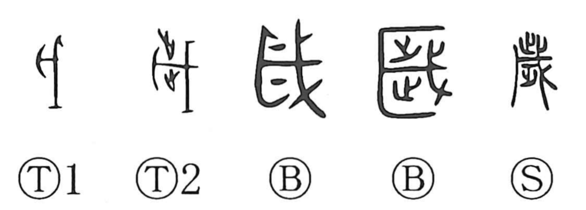

歳

Kun: toshi | On: sai
year ・ age ・ years old
Explanation
In its oldest form, this character centers on the broadax element (戊). Later hands added the shapes of footprints (止) above and below the blade, which in the present form appear as 止 at the top and 少 below, together forming 歩 (步) alongside the ax. Originally, 歳 was the name of a ritual in which meat cut with a broadax was offered in worship. Because this ceremony was held once a year, it became a marker of the annual cycle, and the character came to mean “year” or “one year.” Historically, it served as the year-counting term in the Xia dynasty, was replaced by 祀 in the Yin (Shang), and by 年 in the Zhou.